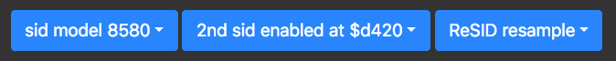

redefining browser based C64 emulation
First it started only as an experiment last year and then it became a passion for redefining browser based c64 emulation.
you like a cinematic retro expierience, we got the button for you.
the big picture ... going immersive deep without distraction with thin beezels
[picture of borderless]
getting into the groove with clean and high quality sound ! we built in the latest resid processor and you can even double it ...

ready for a scroll ? A gorgous view of the hottest demos is boosting you to easily select and instantly run them by just a click ..

we know the amount of demo productions is huge ? We crafted a favourite button for this ...

get your fingers dirty and code little scripts to beat games AI ... can your code beat the game designers code of the 80ties?
[picture of a short script with sprite positions ...]
No keyboard ? You are being on a touchscreen device right ?
No problem define keys and overlay action buttons and also remapping of keyboard keys is possible ...
[picture of custom key buttons with emojis]
The demo scene is great they surprise and amaze us every day with technical and artful new masterpieces for the Commodore C64 ... here are some of the most adored demos picked and hand selected by us.